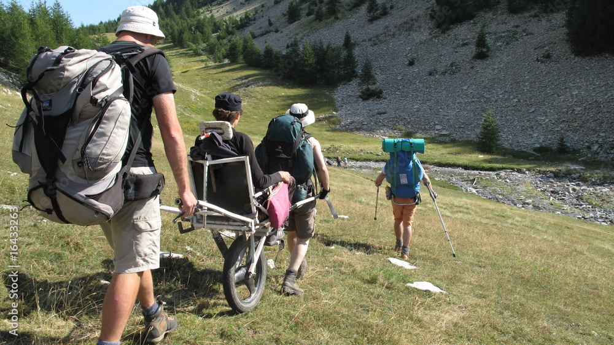
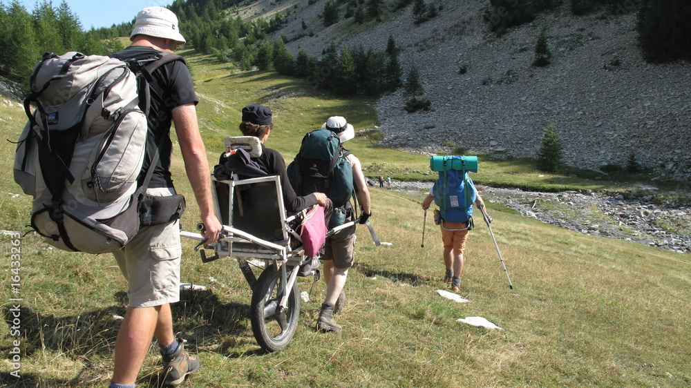
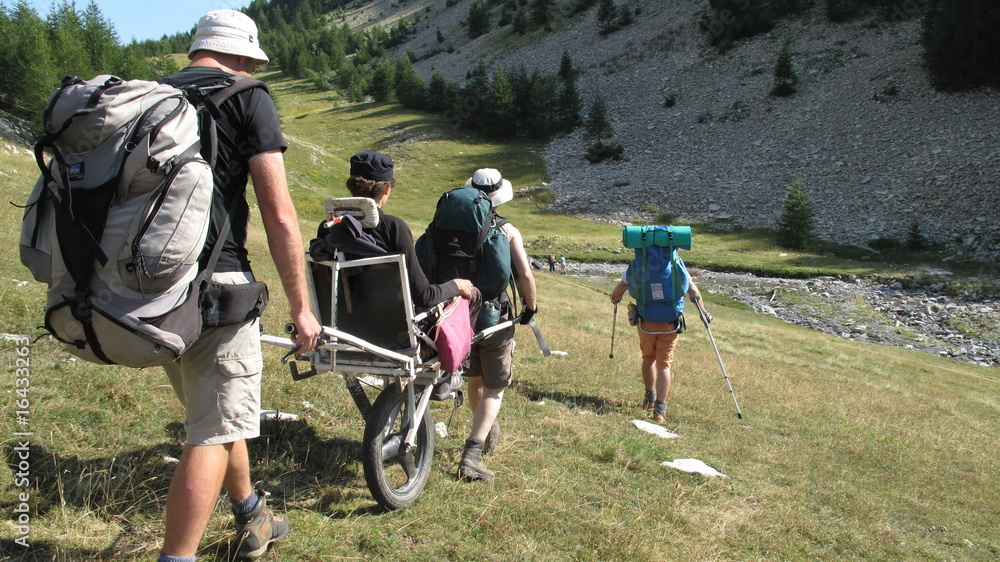
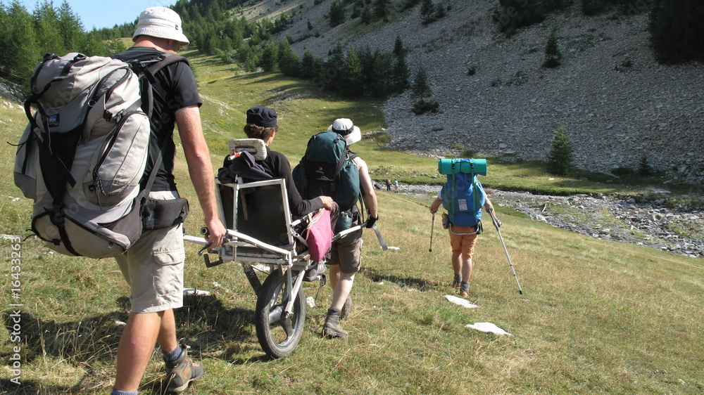

 

We are a new, independent rambling group operating from the heart of Kirklees, Huddersfield. Founded in 2020 by Jonathan Slack, Kevin Smith and Steven Moss, our aim is to provide accessible rambling experiences to as wide an audience as possible, including those with physical and mental disabilities. Our schedule includes:
Please note: as a group aiming to cater towards disabilities, we currently restrict the pacing of our walks, so as not to be too strenuous given a certain walk length. This may be subject to change as the fitness levels and capabilities of the group members change, however.
Become part of an inclusive group that works in partnership with organisations such as the Disabled Ramblers and the FieldFare Trust in helping remove the barriers that stop those who have limited mobility in enjoying rambling. At Hudds Hikes, we believe that the countryside should be as accessible as possible.
Our head walkers are all first-aid trained and equipped, and knowledgeable of emergency procedures should your safety be in doubt.
With an extensive knowledge of the landscapes and history comprising our walks in the Kirklees, Peak District and general Yorkshire area, you won't receive a better countryside tour from anyone else!
Our wheelchair and mobility device friendly walks are denoted by a wheelchair icon.
We define these walks as having no stiles and terrain that is suitable for wheeled mobility devices. This is weather dependent, e.g. woodland terrain becoming muddy in the rain, and we would recommend a capable walking companion for support, especially for wheelchair users.
You're free to join us for one of our walks and see if we're the right group for you. If you enjoy the experience, why not sign up?